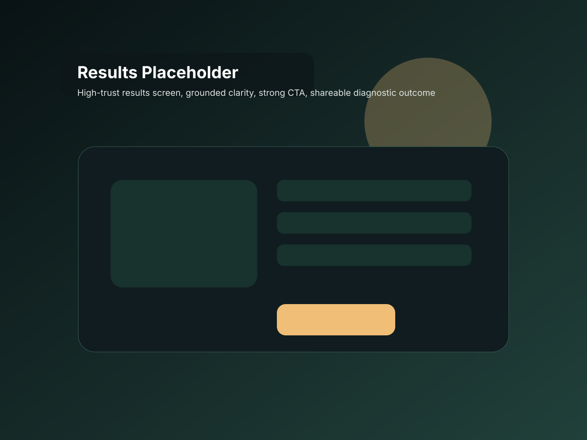

Your space shows stronger readiness than most. That does not make it exempt.
This usually means your team has clearer thresholds, better communication, and a stronger instinct for containment than many spaces do. The work now is refinement, not complacency.

What this usually means
This score often appears in spaces that take readiness seriously, have learned from prior incidents, or already know that sincerity without structure is not enough.
Top risks
- Past success hides the next blind spot.
- The team gets looser because the basics feel familiar.
- One exhausted or inflated person quietly destabilizes the system.
- Bigger scale or greater intensity reveals weak points you have not had to face yet.
Your top hidden gaps
Forward this to the co-founder, facilitator, or ops lead most likely to score your space differently.
Unlock your full breakdown
Enter your email to see where your score is strongest, where it is exposed, and what this result usually looks like inside a real team. You will also get your top weak spots, your strongest category, and a plain next step if you want a second set of eyes.
No fluff. No spam. Just your result, your top hidden gaps, and a next step that makes sense.
Your score is only the headline. These categories show where the real exposure is.
The categories below are calculated directly from your answers and give you a clearer read on where your space is most likely to wobble under pressure.
If this brought up something real, get an outside read.
If you want a sharper look at the blind spots even strong teams miss, request a private read and compare your score with the people who help hold the room.
Shareable result link: